直近1週間の更新時系列
10/17 (土)

無料オープンソースオフィススイート「ibisOffice」をibisPaint開発元がリリース、ブラウザまたはWindows・Mac版アプリでWord・Excel・PowerPointファイルの閲覧と編集が可能
はてブ11 · 新しく出た
11
GIGAZINEフロントエンド・デザイン
基本無料のイラスト制作アプリ「アイビスペイント(ibisPaint)」で知られるibisWorksが、Microsoft Officeファイル形式を編集できる無料オープンソースオフィススイート「ibisOffice」をリリースしました。
4時間前
DV疑惑で全てを失ったジョニー・デップ、裁判で明らかになった壮絶な真実が書籍化
カルチャー
シネマトゥデイカルチャー
映画『パイレーツ・オブ・カリビアン』シリーズをはじめとした人気作に主演してハリウッドの頂点を極めるも、元妻アンバー・ハードとの6年に及ぶ泥沼闘争でDV疑惑をかけられ、全てを失ったジョニー・デップ。
5時間前
「VIVANT」“別班レディ”田代久美子が再登場へ 窮地の乃木らを救うべく秘策考案
カルチャー
シネマトゥデイカルチャー
18日放送の日曜劇場「VIVANT」（TBS系・毎週日曜よる9時～）第21話に、シンガーソングライターのレイヤマダが演じる“別班レディ”こと田代久美子が再登場することが明らかになった。
6時間前
ピクサーで『トイ・ストーリー』5作すべてに携わった日本人がいた 第一線で活躍し続ける秘訣とは？
カルチャー
シネマトゥデイカルチャー
世界初の長編フルCGアニメーション映画『トイ・ストーリー』（1995）から、この夏公開されて世界興行収入11億4,842万5,809ドル（約1780億円）というシリーズ最大のヒットを記録した『トイ・ストーリー5』まで、5作すべてに携わった日本人クリエイターがいる。
7時間前

すべてのAIコーディングエージェントのコストを閲覧・検索・追跡しローカルで動作する「AgentsView」、Claude Code・Codex・Cursor・Copilot・Geminiなど60種類以上のエージェントを自動検出し全文検索も可能
はてブ49
49
GIGAZINEAI・LLM
Claude CodeやCodexなどを並行して利用すると、どのAIコーディングエージェントやモデルへどれだけトークンを使ったのか全体像を把握しにくくなります。そこで使えるのが複数のエージェントのローカル履歴を自動収集し、モデル別・日別・セッション別の利用量やAPI料金換算のコストをまとめて確認できる「AgentsView」です。
9時間前
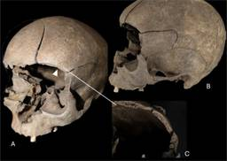
バイキングの暴力を物語る「家の中の痕跡」を発見
発見
ナゾロジーサイエンス
バイキングと聞くと、船で海を渡って各地を襲う、荒々しい戦士の姿を思い浮かべる人も多いでしょう。 実際、鉄器時代からバイキング時代にかけてのスカンジナビアは、戦士を重んじる考え方が広まった時代として知られます。 時代でいえば、紀元前500年ごろから西暦1050年ごろまでにあたります。 ところが意外なことに、当時の墓地に眠る人々の骨には、けがの跡が比較的少ないことが知られてきました。 荒々しい時代のはずなのに、暴力の跡はどこに残されていたのでしょうか。 国際研究プロジェクト「BODY-POLITICS」のチームは、その答えを墓地ではなく、人々が暮らした家の中に探しました。 家の炉や床下から見つか…
9時間前
マタギドライヴへの道
必読 · 安宅和人（はてなブログ） · はてブ3
3
ニューロサイエンスとマーケティングの間 - Between Neuroscience and Marketing
1.4/50 Summilux ASPH, Leica M10P, RAW 落合陽一『マタギドライヴ』を二度読んだ。とても大切な友人が８年もかけた渾身の一冊なだけに、なにか言葉を残さねばと思いながら、もう二週間も経ってしまった。ここらで一つ残しておければと思う。この一冊は、落合watcher的な人には垂涎の一冊だ。何しろ、彼が様々な場で語り、形にし、人に訴えてきたほぼすべての概念群が、彼自身の言葉で繰り返し、重層的に語られているからだ。そこに現れるのは、大阪で形をなし、いままた横浜でnull2n*1という形で第二形態と化した、nullと仏教の空、華厳経における事事無碍、オブジェクト指向的な世界…
10時間前
綾野剛、常に全力の「演技変態」と吉田恵輔監督が脱帽 芝居を支えるアスリート思考
カルチャー
1
シネマトゥデイカルチャー
作品ごとに唯一無二の色を放ち、そのたびに俳優としての新たな“すごみ”を見せてくれる綾野剛。
20時間前
11年独身でも約9割は「人生の満足度」が高いままと判明
発見
1
ナゾロジーサイエンス
親戚の集まりで「いい人はいないの？」と聞かれ、笑ってごまかした経験がある人も多いでしょう。 人の一生の歩みを説明する心理学の理論では、パートナーを見つけて結婚することが、人生の大事な目標として扱われてきました。 その一方で、一度も結婚しないまま年を重ねる人たちには、あまり目が向けられてきませんでした。 では、結婚せず恋人もいない暮らしを10年以上続けた人は、本当に年々不満をためていくのでしょうか。 今回の研究は、ドイツで11年間ずっと独身だった約3000人の記録をたどり、この問いに答えようとしたものです。 研究の詳細は、カナダのトロント大学らにより、2026年8月21日付で学術誌『Perso…
20時間前
10/16 (金)
ゴジラに挑む新怪獣、上位4体が決定「新怪獣総選挙」最終決戦・第2フェーズ進出の怪獣発表
カルチャー
1
シネマトゥデイカルチャー
ゴジラに並び立つ新たな怪獣を誕生させるプロジェクト「TOHO presents 新怪獣総選挙」の第1フェーズの投票結果が16日に発表された。全8体の新怪獣から、上位4体が最終決戦の第2フェーズに進出。
1日前
『ゴジラ-0.0』に備えよ 前作『ゴジラ-1.0』を振り返るダイジェスト「予習映像」公開
カルチャー
1
シネマトゥデイカルチャー
10月16日、ゴジラシリーズ最新作『ゴジラ-0.0』（ゴジラマイナスゼロ）の11月3日公開に向け、前作『ゴジラ-1.0』（ゴジラマイナスワン）からを2分40秒で振り返るダイジェスト「予習映像」がYouTube「東宝MOVIEチャンネル」などで公開された。
1日前
『キル・ビル』4時間半＆R18＋の新生版、来年1月公開決定！タランティーノが本来構想した“一本の映画”に再編集
カルチャー
1
シネマトゥデイカルチャー
鬼才クエンティン・タランティーノ監督の代表作『キル・ビル』を、監督自らが本来構想していた“一本の映画”として再編集した『キル・ビル ザ・ホール・ブラッディー・アフェア』が、2027年1月22日（金）よりTOHOシネマズ 日比谷ほかにて2週間限定で全国公開されることが決定した。
1日前
ナスカで300点超の地上絵が新発見 AIが考古学のゲームチェンジャーに (ナショナル ジオグラフィック)
発見
日経ビジネス電子版 最新記事AI・LLM / サイエンス / ビジネス・公共
1926年に始まったナスカの地上絵の研究から100年。山形大学の研究チームはAIで新たに300点超特定。小道沿いに並ぶそれらは旅人へのメッセージだった可能性がある。
1日前
AI時代の管理部門は「意思決定のコックピット」 3つの力を身に付けよ (人的資本、プロの視点)
設計判断・移行
日経ビジネス電子版 最新記事AI・LLM / 組織・マネジメント・QA / ビジネス・公共
AIで定型業務を効率化しても、浮いた時間が社内の確認や根回しに消えては変革にならない。経営課題を問い直し、データを文脈で読み、組織を動かす力が管理部門には求められる。
1日前

システムが正常でも、お客さまの業務は止まっているかもしれない。SmartHRのCREが挑む「顧客の可観測性」 SmartHR Tech Blog
SmartHR Tech Blog
組織・マネジメント・QA
2
組織・マネジメント・QA
こんにちは！SmartHR 採用担当の南石（@nanseki_o）です。2026年7月にSmartHRに2回目の入社をしました。 本日は、出戻りしたら爆誕していた「CRE」というロールについてインタビューした内容をお届けします。 CRE（Customer Reliability Engineering）という言葉を聞いたことはありますか。 技術的な問い合わせに対応するエンジニア、カスタマーサポートと開発チームの橋渡し役といったイメージを持つ方もいるかもしれません。 SmartHRのCREは2025年7月に誕生した組織です。お客さまからの技術的な問い合わせへの対応も担っていますが、それは活動の一…
1日前

亡くなった母親が残した古い写真を読み取るためAIでフィルムスキャナー用のドライバーを自作
はてブ19 · 作ってみた
19
GIGAZINEAI・LLM
Red Hatのエンジニアリング・ディレクターを務めるクリスチャン・F・K・シャラー氏が、古い写真のネガフィルムをスキャンするために「AIでドライバーを自作した」と報告しています。
1日前

AIで引ければいい、から始めた運用ナレッジ
はてブ38
38
RAKUS Developers Blog | ラクス エンジニアブログAI・LLM
はじめに 楽楽販売を担当している梶です。 運用の知識をAIから引ける（AIが検索して参照できる）ようにして、開発フローの概要設計に運用影響の確認を組み込むところまで来たので、その経緯を書きます。最初から全体を設計していたわけではなく、気づきのたびに一段ずつ足してきた記録です。 運用への影響は、できるだけ設計の段階で拾っておきたいと考えています。サービスを利用するお客様の業務を止めないため、そして、そのための運用を無理なく続けるためです。 「運用のことは、あの人に聞かないと分からない」という状況に心当たりのある開発者や運用担当の方に、読んでいただけたらうれしいです。 はじめに 設計の段階で、運用…
2日前

DevFest 2026 日本各地で開催！最寄りの会場を見つけて今すぐ参加登録しよう!
AI・LLM
Google Developers JapanAI・LLM
Google から開発者のみなさま向けの情報をいち早くお届けするブログです。
2日前
スマホにも楽々おさまる将棋AIの軽量評価関数「つようら王11mini/micro」が無償公開／「MIT」ライセンスで商用も可。サイズは「水匠5」の1/7以下ながら棋力は上
はてブ3 · 数字のインパクト
3
窓の杜AI・LLM
将棋思考エンジンの評価関数「つようら王11mini」「つようら王11micro」が10月14日、「pixivFANBOX」で無償公開された。ライセンスは「MIT License」で、二次配布や商用利用も自由に行える。
2日前
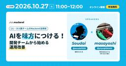
AI時代の監視・障害対応を考えるオンラインイベント——AIを味方につける！開発チームから始める運用改善 を開催します！
AI・LLM · 設計・SRE・基盤 · 組織・マネジメント・QA
Hatena Developer BlogAI・LLM / 設計・SRE・基盤 / 組織・マネジメント・QA
こんにちは、Mackerelチームの id:chin-hy です！ このたび、はてなSREの id:masayoshi と、そーだいさん id:Soudai が登壇するオンラインイベントを、2026年10月27日（火）11:00〜12:00 に開催します🎉 AIでコードを書くのは当たり前になってきたけど、監視や障害対応にAIを使うのはまだ手探り──そんな実感を持っているエンジニアの方も多いのではないでしょうか。今回のイベントは、「AIで開発する時代、監視・運用もAIで」をテーマに、実際に手を動かしている2人が、実演と対話でお届けします。 ▼ お申し込みはこちら: AIを味方につける！開発チーム…
2日前

施策立案からQAまで：AIエージェントで回す開発フローの全体像とアーキテクチャ
AI・LLM · 設計・SRE・基盤 · 組織・マネジメント・QA
2
Findy Tech BlogAI・LLM / 設計・SRE・基盤 / 組織・マネジメント・QA
こんにちは。ファインディ株式会社でプリンシパルエンジニアをしている戸田です。 ファインディでは、施策の立案からIssueの生成、タスク分解、AIエージェントによる並列実装やQAまで、開発フローの各所にAIエージェントを組み込んでいます。 この記事では、開発フロー全体のアーキテクチャを図で示し、構成要素ごとに役割を解説します。PM、開発、QAのそれぞれでエージェントが何を担い、人間がどこで判断しているのか、開発の状態をGitHubのどこに置いているのかが分かる内容となっています。 複数のAIエージェントを開発フローに組み込もうとしている方や、AIエージェントとの役割分担を考えているエンジニアの方…
2日前
開発・検証環境のPR承認と負荷試験をAIに任せる ── SRE待ちを減らす線引きとハーネス
はてブ26
26
ZOZO TECH BLOGAI・LLM / 設計・SRE・基盤
はじめに こんにちは、SRE部 検索基盤SREブロックの花房と富田です。普段は、ZOZOTOWNの検索基盤における信頼性向上やコスト改善、インフラ運用を担当しています。 検索基盤の開発案件では、開発者とSREが役割を分担して本番リリースまでの作業を実施しています。その中で、インフラリポジトリのPull Request（PR）レビューと、リリース前の負荷試験はSREの作業待ちになることがありました。背景には、AI活用によるPRの増加や案件が集中する時期のSREチームのリソース不足があります。 そこで、SREの作業待ちを減らすため、PRレビューと負荷試験の中でも本番環境へ影響を与えない作業をAIへ…
2日前
Amazonで年に一度のプライム感謝祭2026が開催！ 絶対に見逃せないお買い得品を紹介します
フロントエンド・デザイン
コリスフロントエンド・デザイン
※本ページは、アフィリエイト広告を利用しています。 いよいよ、年に一度の「プライム感謝祭2026」が開催です！ プライム会員限定のセールということで、通常のセールよりもかなり安くなっており、非常にお買
2日前
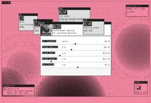
“答えだけください”を極めたAI「Jev」、チャットしないAIで300件の問い合わせを一気に仕分けてみた【柳谷智宣のAI ウォッチ！】
はてブ20
20
窓の杜AI・LLM
ChatGPTやClaudeのようにユーザーの問いに文章で答える生成AIが当たり前になっている。とはいえ、「この問い合わせは急ぎか」「どの部署に回すべきか」といったシンプルな判断をしてもらいたいだけなのに、毎回文章を生成する必要はない。そこで注目したいのが、判断に特化したAI「Jev（ジェヴ）」だ。
2日前
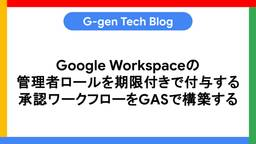
Google Workspaceの管理者ロールを期限付きで付与する承認ワークフローをGASで構築する  G-gen Tech Blog
G-gen Tech Blog
G-gen の三浦です。当記事では、Google Apps Script（以下、GAS）を使い、申請と承認を経て Google Workspace の管理者ロールを有効期限付きで付与する仕組みを紹介します。 概要 Google Workspace の管理者ロール 一定期間有効な管理者ロールの割り当て 当記事で構築する申請フロー 注意点 検証の手順 事前準備 スプレッドシートとスクリプトの作成 Admin SDK の拡張サービスの有効化 申請対象のロールの選択 申請フォームと申請台帳の作成 検証 一般ユーザーによる申請の実施 管理者による申請の承認 権限付与の確認 有効期限による自動取り消しの確…
2日前

お盆ど真ん中に100人超！社内イベント「Codex祭り Sol Ultra」を開催！ CyberAgent Developers Blog | サイバーエージェント デベロッパーズブログ
CyberAgent Developers Blog | サイバーエージェント デベロッパーズブログ
AI・LLM
AI・LLM
お盆ど真ん中に100人超！社内イベント「Codex祭り Sol Ultra」を開催！ Codex ambass
2日前
『超高速！参勤交代』10年ぶり新作、4月23日公開決定！佐々木蔵之介「空を飛びます」裏側語る特別映像公開
仕組みを掘る
シネマトゥデイカルチャー
佐々木蔵之介主演による映画『超高速！参勤交代』シリーズの10年ぶりの新作となる『超高速！参勤交代 フルスロットル』の公開日が2027年4月23日に決定し、佐々木のインタビューと撮影現場の裏側を映したメイキング映像を収めた特別映像が公開された。
2日前
メモリ8GBでもWindowsがキビキビ動作！この秋の「Windows 11」は改善が盛りだくさん／マイクロソフトが改善点を解説、検索、スマホ連携、フォト、ゲーミング、ペン・触覚対応、アクセシビリティまで
はてブ18 · 数字のインパクト
18
窓の杜フロントエンド・デザイン
米Microsoftは10月15日（現地時間）、「Windows 11」の最近の改善と今後の改善予定を、公式ブログ「Windows Experience Blog」で発表した。同社は今年になってOSの“作りこみ”に注力しているが、その手が緩むことはないようだ。
2日前
官民370兆円の戦略17分野 AI・造船・創薬で読み解く日本の勝ち筋 (テーマ別まとめ記事)
仕組みを掘る
日経ビジネス電子版 最新記事AI・LLM / ビジネス・公共
高市早苗政権は、人工知能（AI）や半導体、造船、創薬など17の分野を重点投資の対象に定めた。官民投資ロードマップでは2040年度までに累計370兆円超の国内投資を見込み、予算編成の見直しや投資促進税制で後押しする。一方で、総花的との批判や財政への懸念、企業が本気で投資するかという課題も残る。産業政策の大競争時代に日本が選んだ戦略17分野の狙いと課題を、過去記事から振り返る。
2日前
「800円が1万円に」 前世代メモリーが高騰、メタは再利用技術を開発 (分断時代の経済安保)
ビジネス・公共
1
日経ビジネス電子版 最新記事ビジネス・公共
メモリー半導体で価格逆転が起きている。AI向け先端品より、民生・産業機器向けの前世代品が高値になっているのだ。DRAMメーカーがAI向け製品へ生産能力を振り向けており、前世代品の需要家はメモリー不足に頭を悩ませている。調達難の広がる中、米メタは前世代品を再利用する独自技術を開発するなど、資源の有効活用を目指している。
2日前
ゼンショー、オリーブの丘「まず500店」規模へ サイゼリヤ1強市場に攻勢 (ゼンショー 逆転の法則)
ビジネス・公共
1
日経ビジネス電子版 最新記事ビジネス・公共
国内外食最大手のゼンショーが「すき家」「はま寿司」に次ぐ第三の柱を定めている。イタリアンのファミレス「オリーブの丘」だ。「サイゼリヤの対抗勢力」とも噂される同社の成長戦略とは。
2日前
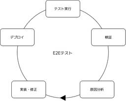
E2E テストのフィードバックループを小さくするためのプラクティス フューチャー技術ブログ
フューチャー技術ブログ
はてブ80
80
AI・LLM / 組織・マネジメント・QA / ビジネス・公共
コーディングエージェントの普及で E2E テストの比重が上がるなか、テスト基盤の側でフィードバックループを小さくする4つのプラクティス（デプロイレスのテスト実行・テストの並列化・自己完結型のテストレポート・分散トレーシング）を紹介します。
2日前
10/15 (木)
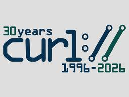
データ転送ライブラリ「curl」に特定の条件でリモートからコードを実行される脆弱性／深刻度Highを含む24件の脆弱性を修正したv8.23.0が公開
はてブ114
114
窓の杜セキュリティ
データ転送ライブラリ「curl」の最新安定版v8.23.0が、10月14日に公開された。全24件の脆弱性を修正したセキュリティアップデートとなっている。
2日前
「水金地火木土天海」は太陽の死で崩れる――惑星の並びが壊れる仕組みを発見
仕組みを掘る · 発見
ナゾロジーサイエンス
子どもの頃に覚えた「水金地火木土天海」は、大人になった今もすらすら口から出てきます。 太陽系の惑星の並びは、それほど当たり前で、動かないものに見えます。 けれども太陽にも寿命があり、いずれ外側のガスを宇宙へ吐き出して、小さな燃えかすの星になります。 そのとき、木星・土星・天王星・海王星という外側の4つの惑星はどうなるのでしょうか。 これまでは、太陽が死んだあとも、4つの惑星は途方もなく長いあいだ無事だと計算されてきました。 ところが新しい研究は、その計算が、ある前提に寄りかかっていたと指摘しています。 太陽の最期に、外側の惑星たちに何が起きうるのかを見ていきます。 研究の詳細は、2026年9…
2日前
AI ではベテランエンジニアも全員ジュニアからやり直しになる（翻訳）
AI・LLM
1
TechRachoAI・LLM
概要 元サイトの許諾を得て翻訳・公開いたします。 英語記事: We are all juniors again
2日前
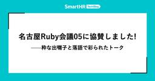
名古屋Ruby会議05に協賛しました！——粋な出囃子と落語で彩られたトーク SmartHR Tech Blog
SmartHRは、2026年9月19日(土)に愛知県名古屋市の大須演芸場で開催された「名古屋Ruby会議05」に協賛し、8名が参加、1名が運営に携わりました。 この記事では、参加したメンバーのnaitoh、delhi09、osyoyu、natty、そして運営として携わったsoulがイベントの模様をレポートします！ 会場の大須演芸場 目次 目次 名古屋Ruby会議05とは 運営 スポンサーLT 印象に残ったセッション 「Ruby のブロックが、GPU のカーネルになる」 @yujiteshima 「特殊変数大全」 @dak2 「System Test is dead, long live Sys…
2日前
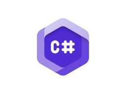
「C# Dev Kit」が大刷新、読み込みは最大180倍に、サーバーのメモリ消費は最大約85％減／11月の正式提供が予定されている「.NET 11」にあわせたアーキテクチャー変更
はてブ33 · 数字のインパクト
33
窓の杜設計・SRE・基盤
「C# Dev Kit」のアーキテクチャーが刷新され、大幅なパフォーマンス改善を実現したとのこと。米Microsoftが10月6日（現地時間）、公式ブログ「.NET Blog」で発表した。11月の正式提供が予定されている「.NET 11」にあわせた変更であるという。
2日前

Kaigi on Rails 2026に向けて「きみはどのハチ公？ 開発タイプ診断！」社内お披露目会を開催しました！ SmartHR Tech Blog
こんにちは、2026年4月にSmartHRへ新卒で入社したnose（のせ）です。 SmartHRは、2026年10月16日（金）・17日（土）にベルサール渋谷ガーデンで開催されるKaigi on Rails 2026にブースを出展します！ブースでは、「きみはどのハチ公？ 開発タイプ診断！」を開催します。開発の中で好きなことや、うれしいと感じる場面について答えると、今の自分に近いハチ公タイプが分かる診断です。Kaigi on Railsのコアコンセプトは、「初学者から上級者までが楽しめるWeb系の技術カンファレンス」です。診断も、経験に関係なく楽しんでもらえるようにしました。 イベントに先駆けて…
3日前
Kaigi on Rails 2026にSilver Sponsorとして協賛します！ Sansan Tech Blog
こんにちは。名刺アプリ「Eight」でエンジニアをしている鳥山（@pvcresin）です。 Sansan株式会社は、10月16日（金）・17日（土）に開催される「Kaigi on Rails 2026」にSilver Sponsorとして協賛します！ この記事では、Kaigi on Rails 2026への協賛の背景などをご紹介します。
3日前
エージェント開発、Antigravity、本番運用の設計まで。開発者のための Agentic AI Summit '26 Fall
AI・LLM · 設計・SRE・基盤
Google Developers JapanAI・LLM / 設計・SRE・基盤
Google から開発者のみなさま向けの情報をいち早くお届けするブログです。
3日前

Akinatorで始めるAgentic RL ー タスク設計と初期検証 ー
設計・SRE・基盤
松尾研究所テックブログのフィード設計・SRE・基盤
1. はじめに松尾研究所の具です。昨今、LLMが外部環境に作用し自律的にタスクをこなすAIエージェントに関する研究が注目されています。中でも、多様なツールを用いてAgentに適切な行動を取らせるために、ツールの利用方法を推論時のコンテキストとして渡すのではなく、事後学習によって獲得させる枠組みであるAgentic RLが注目されています。Agentic RLとは、「LLMを学習可能な方策として扱い、環境と対話しながら目標達成するエージェントとしての能力を強化学習で向上させる枠組み」[1]です。弊社の過去の取り組みでは、太田さん・尾崎さんのこちらの記事[2]で、メール検索タスク性能...
3日前

セキュリティ業務向けAIエージェント基盤「SAGE」の開発記 第1弾：判断は人間に委ねる設計
AI・LLM · 設計・SRE・基盤 · セキュリティ
LINEヤフー Tech Blog (LY Corporation Tech BlogAI・LLM / 設計・SRE・基盤 / セキュリティ
こんにちは。社内のセキュリティ業務にAIを取り入れる業務を担当している、Security Development Division（LINE Plus Security R&D）チームです。この記事は...
3日前

大規模テキストデータを活用したサービス特化型言語モデルの社内共有プロジェクト：Moegi
組織・マネジメント・QA
LINEヤフー Tech Blog (LY Corporation Tech Blog組織・マネジメント・QA
こんにちは。私たちはLINEヤフー株式会社で言語処理モデルを開発しているプロジェクトチームです。LINEヤフーでは、さまざまなサービス（例：Yahoo!ショッピング、Yahoo!検索、Yahoo!知恵...
3日前

Go 1.26.6へのバージョンアップでnet/httpのバグを踏んで稀に502エラーを発生させた原因をちゃんと理解する
セキュリティ
2
Sansan Tech Blogセキュリティ
技術本部Platform Engineering Unit Identity Platformグループの都筑です。 弊社が提供する経理AXサービス「Bill One」や契約AXサービス「Contract One」といったプロダクトが利用する共通認証基盤「Auth One」の開発と運用に携わっています。 Auth OneではDependabotやRenovateを利用して依存関係を自動アップデートするPRを作成し、CIでのテストやレビューが通ったらマージし、E2Eテストや動作確認を実施し本番反映するリリースフローとなっています。 先日、Go 1.26.6へのバージョンアップを実施したところ、社内…
3日前
macOSでウインドウがたくさん表示されていてもワンクリックで目的のウインドウを手前にできるアプリ -Tungsten Edge
はてブ3
3
コリスフロントエンド・デザイン
macOSでウインドウを切り替えるとき、どのようにしていますか？ もちろん、そのウインドウをクリックすれば手前に表示されますが、重なっていると困難です。Dockでアプリのアイコンをクリックしても、その
3日前

初めての国際標準化会合へ！新入社員が飛び込んだ3GPP CT1
設計・SRE・基盤
ENGINEERING BLOG ドコモ開発者ブログ設計・SRE・基盤
はじめに みなさんこんにちは！ドコモ6Gテック部の新入社員、西村麻希（にしむらまき）です。 このたび、3GPP CT1#162会合に参加する機会をいただき、初めて国際標準化会合に現地参加しました。 入社後にモバイルネットワークや3GPPを学び始めた私にとって、国際標準化会合への参加は、とても大きな挑戦でした。 本ブログでは、 CT1会合はどのような場なのか 実際に参加して感じた国際会合の雰囲気 参加者との交流を通して学んだこと 今後の課題として感じたこと を中心にご紹介します。 ドコモでのグローバルな業務や標準化業務に少しでも興味のある方、将来このような仕事に挑戦してみたいと考えている方に、会…
3日前
社内勉強会で900人以上が参加！Claude Codeのコスト最適化を支える5つの習慣 CyberAgent Developers Blog | サイバーエージェント デベロッパーズブログ
AI・LLM
1
AI・LLM
Anthropicの社員を講師に招いた社内勉強会で得た実践のヒント こんにちは、グループIT推進本部でライセン
3日前
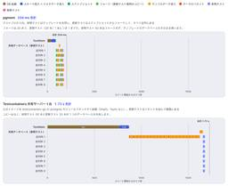
E2Eテストを爆速にする: オンメモリPostgreSQLのpgmem
フューチャー技術ブログ
はてブ59 · 数字のインパクト
59
設計・SRE・基盤 / 組織・マネジメント・QA
完全にオンメモリで動き、テストケースごとにフォークしてスケールするPostgreSQL「pgmem」を作りました。テストダブルの分類からアーキテクチャ、テスト用API、パフォーマンスまでを紹介します。
3日前
10/14 (水)
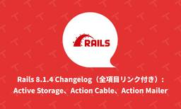
Rails 8.1.4 Changelog（全項目リンク付き）: Active Storage、Action Cable、Action Mailer
1
TechRacho概要 https://techracho.bpsinc.jp/hachi8833/2026_09_28/160
3日前
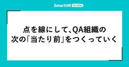
点を線にして、QA組織の次の「当たり前」をつくっていく SmartHR Tech Blog
組織・マネジメント・QA
2
組織・マネジメント・QA
こんにちは、品質保証本部のtarappo です。 2024年9月にSmartHR 品質保証部のActing Managerとして入社して、現在は品質保証本部のDirectorとして働いています。 入社してからあっという間に2年が経ちました。 その間にいろいろなことを経験しつつ、さまざまなことに取り組んできました。 それらは別々の施策を次々と進めたというより、多くの「点」をつなぎ、組織として継続的に品質を高められる一本の「線」にしていく取り組みだったと考えています。 個々の取り組みについては、ブログや登壇などでその都度発信してきました。 今回はそれらの詳細を説明するのではなく、これまでの記事も参…
4日前
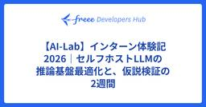
【AI-Lab】インターン体験記 2026｜セルフホストLLMの推論基盤最適化と、仮説検証の2週間
AI・LLM
1
freee Developers HubAI・LLM
はじめに こんにちは。freee の AI-Lab で2週間のインターンに参加した、トニー（斗内一誠）と hirohito（大田啓人）です。トニーは北見工業大学大学院 工学研究科 工学専攻 データサイエンスプログラム、hirohito は奈良先端科学技術大学院大学 先端科学研究科 情報科学領域に在籍しています。 私たちがインターンで取り組んだのは、社内でセルフホストしている LLM の推論を速くする、という課題でした。 先に結果を書いてしまうと、試した3つの手法は、どれも性能を上げられませんでした。1つはサーバーごと落ち、1つは効果が相殺され、論文を読み込んで臨んだ最後の1つも、スループットは…
4日前

Claudeが実装したE2Eテストをレビューするツールを自作してみた エムスリーテックブログ
エムスリーテックブログ
はてブ34 · 作ってみた
34
AI・LLM / 組織・マネジメント・QA
こんにちは。エムスリーのQAチームの須賀です。 私が担当するチームでは、開発経験のないQAエンジニアの方もClaudeを用いてPlaywrightのE2Eテストを実装しています。 Claudeを用いることでE2Eテストの実装自体は簡単になりましたが、Claudeが実装したコードは「テスト実行は成功するがテスト手順や操作対象が誤っている」こともあります。そのため、Claudeが実装したE2Eテストの振る舞いが正しいかどうかは人がチェックする必要があります。 自分でE2Eテストを実装する場合は、実際の画面を見ながら実装するため「このコードが画面のどの要素を操作しているか」は感覚的に分かります。 一…
4日前
使うほど賢くなる分析エージェントの知識基盤の検証と評価 CyberAgent Developers Blog | サイバーエージェント デベロッパーズブログ
AI・LLM
1
AI・LLM
はじめに はじめまして。2026年6月から7月末までの約2ヶ月間、サイバーエージェントのインターンシップに参加
4日前

VLMの賢さとJevの速さを両取りしたい ~ 追加学習なしでロボットを動かす ~ ABEJA Tech Blog
ABEJA Tech Blog
動かしてみた
2
AI・LLM
はじめに 構想 そもそも Jev とは何か 中身はどうなっているのか 公式 Jev は画像を入れられない マーカーで幾何を作る案もあるけれど 欲しかったもの: VLMの汎用性 × 高速な判定 実験 構築したシステム: プランナー × Jev × IK 時間の階層 Jev に聞いていること 準備 手首カメラの較正 高さ方向はルールベース 俯瞰画像の点とアーム位置の対応 おまけ: 音声で指示する 結果 動画で見る1回の流れ 途中でキューブを動かした際の挙動 ざっくりと全体の成績 他の事例との比較 さいごに We are Hiring! はじめに こんにちは、ABEJAでプロジェクトマネージャーをし…
4日前

表形式データ向け基盤モデルNVIDIA Kumo Tabularの紹介
設計・SRE・基盤 · サイエンス
松尾研究所テックブログのフィード設計・SRE・基盤 / サイエンス
はじめにこんにちは、松尾研究所の鈴木明作です！2026年9月にNVIDIAから公開された、高性能な表形式データ向け基盤モデル（事前学習済みモデル）であるKumo Tabularについて紹介します。 TL;DRNVIDIAから表形式基盤モデルのKumo Tabularが公開され、複数の表形式データ向けベンチマークにて1位を獲得しました。表形式データにおけるIn-context Learningにより、モデル更新を伴う再学習はせずに推論が可能です。商用利用可能ライセンスな表形式データ基盤モデルです。 Kumo TabularとはKumo Tabularは、Tran...
4日前

プライベートクラウドにおけるVM Live Migrationの通信暗号化の実装と検証（インターンレポート）
組織・マネジメント・QA · サイエンス
1
LINEヤフー Tech Blog (LY Corporation Tech Blog組織・マネジメント・QA / サイエンス
こんにちは。慶應義塾大学大学院工学研究科人間・社会システム情報科学専攻の菱田快成です。私はIaaSチームのインターン生としてプライベートクラウド「Flava」におけるOpenStackを中心とした仮想...
4日前

同じ REPEATABLE READ でも挙動が違う！？ Spanner / MySQL / PostgreSQL の更新処理を同じ分離レベルで比較してみた
設計・SRE・基盤
COLOPL Tech Blog設計・SRE・基盤
こんにちは。エンジニアの薮 (@tyabu12) です。 最近社内で PostgreSQL を扱う機会があり、MySQL と同じ感覚でトランザクション分離レベルを REPEATABLE READ にしようとしたところ、同じ REPEATABLE READ という名前でも、MySQL と PostgreSQL では SELECT ... FOR UPDATE が読む値が違う ことに気付きました。 トランザクション分離レベル自体は枯れたテーマで、すでに MySQL と PostgreSQL の比較記事は世の中にたくさんあります。ただ、Spanner に関しては 2026年4月に REPEATABL…
4日前

iOSDC Japan 2026のブースで実施した「リアル知恵袋」の裏話 LINEヤフー Tech Blog (LY Corporation Tech Blog
こんにちは、iOSエンジニアのyamakenです。2026年9月11日から9月13日までの3日間にわたって開催されたiOSDC Japan 2026に、LINEヤフーはゴールドスポンサーとして協賛しま...
4日前
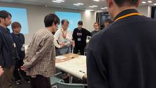
合同会社DMM.comとBASE株式会社にて合同の勉強会を開催しました！  BASEプロダクトチームブログ
BASEプロダクトチームブログ
BASE Departmentでバックエンドエンジニアをしている、かがの（@ykagano）です。 2026年9月30日（水）に合同会社DMM.com 二次元コンテンツ開発部（以降DMM社と表記）とBASE株式会社（以降BASE社と表記）にて合同の勉強会を開催しました。この記事では当日の様子をレポートします！ 開催概要 日時: 2026年9月30日（水）18:00〜 場所: BASE社オフィス内のイベントスペース 参加者: 14名 テーマ: 「カートの課題と取り組みを語り合おう」 DMM社、BASE社ともに、カート領域に関わるメンバーが参加しました。 開催のきっかけ 以前私がPHP Confe…
4日前

sending queue is fullから理解するOpenTelemetry Collector Exporter Sansan Tech Blog
技術本部 Data Intelligence Engineering Unitの神林です。MasterData SystemであるSOC v2の開発、運用に携わっています。 buildersbox.corp-sansan.com Sansan株式会社では、Goに関する技術発信に積極的に取り組んでおり、カンファレンスへの参加や社外での登壇などを通じて、日々の開発で得た知見を発信しています。 2026年9月11日に開催されたGo Conference 2026でも、社内から数多くのプロポーザルを提出しました。 本シリーズでは、その中から惜しくも採択には至らなかったプロポーザルを取り上げます。 プロ…
4日前
Wizの全体像と主要機能を解説 G-gen Tech Blog
AI・LLM · 設計・SRE・基盤 · セキュリティ
AI・LLM / 設計・SRE・基盤 / セキュリティ
G-gen の武井です。当記事では、Google Cloud に加わった Wiz について、製品構成や主要機能から、AI エージェント、導入の流れまでを解説します。 はじめに Wiz とは Google Cloud への参画 Security Command Center との関係 Wiz の全体像 プラットフォームの位置づけ エージェントレス接続 Wiz Security Graph Google Cloud との連携 主要製品 製品構成 Wiz Code Wiz Cloud Wiz Defend 機能と製品のマッピング 概要 Wiz Code の機能 Wiz Cloud の機能 Wiz D…
4日前

オーガナイズドセッション「偽情報対策技術」をWebDB夏のワークショップ2026で開催しました
セキュリティ · サイエンス
fltech - 富士通研究所の技術ブログセキュリティ / サイエンス
こんにちは、セキュリティサイエンス研究所の佐々木です。2026年9月15日（火）から17日（木）まで、大阪公立大学りんくうキャンパスで開催されたWebDB夏のワークショップ2026でオーガナイズドセッション「偽情報対策技術」を開催しましたので、その内容についてご紹介します。
4日前
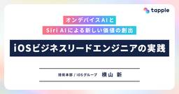
オンデバイスAIとSiri AIによる新しい価値の創出-タップルのiOSビジネスリードエンジニアの実践 CyberAgent Developers Blog | サイバーエージェント デベロッパーズブログ
AI・LLM
AI・LLM
マッチングアプリ「タップル」のiOS開発を担当している横山です。 本記事では、Foundation Model
4日前

技育祭2026秋で「“優秀な誰か”の下位互換にならないために」というタイトルで発表してきました フューチャー技術ブログ
AI・LLM
1
AI・LLM
技育祭2026秋 Day1 で「“優秀な誰か”の下位互換にならないために ※ただし”誰か”にはAIを含む」というタイトルで登壇しました。単一の物差しで勝負すると下位互換になるという問題意識から、経験を掛け合わせて模倣されない価値を作る話をし、当日答えきれなかった質問にもこの記事で回答します。
4日前
10/13 (火)
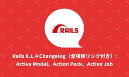
Rails 8.1.4 Changelog（全項目リンク付き）: Active Model、Action Pack、Active Job
1
TechRacho
概要 https://techracho.bpsinc.jp/hachi8833/2026_09_28/160
4日前
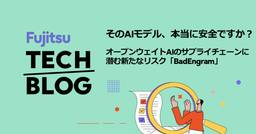
そのAIモデル、本当に安全ですか？ オープンウェイトAIのサプライチェーンに潜む新たなリスク「BadEngram」
AI・LLM · セキュリティ
fltech - 富士通研究所の技術ブログAI・LLM / セキュリティ
私たちは、Fujitsu Research of EuropeのAIセキュリティ研究チームです。Pillar Securityとの共同研究を通じて、オープンウェイト言語モデルで採用が進む新しいコンポーネント「ゲート付きパラメトリックメモリ」に潜む、新たな攻撃面を発見しました。
4日前
コミュニティコンペのすゝめ ABEJA Tech Blog
はじめに DS Dayとは 実施したコミュニティコンペの内容 コンペのルール カードの種類 データの形式 評価方法 ちょっとした工夫点 実際のコンペの様子 結果 さいごに We are hiring!! はじめに こんにちは。ABEJAのデータサイエンス（DS）部の大谷です。 DS部では、3か月に1回を目処に「DS Day」というオフラインの社内イベントを開催しています。普段はリモートで働いているメンバーが集まって、お互いのことをもっと知ったり、コミュニケーションをとろう、というイベントです。 今回のDS Dayでは、Kaggleのコミュニティコンペを開催しました。せっかくなので、どんなコンペ…
4日前
大量の音声データの中から音声認識で“聞くべき音声”を見つける、音声検収ツールの開発
AI・LLM
1
SEGA TECH BlogAI・LLM
皆さんこんにちは。セガの開発技術部でサウンドの技術についてリサーチ、ツール制作を行っている塚越です。 今回は音声認識技術を使った音声ファイルの確認ツールを紹介します。
5日前

iOSDC Japan 2026に参加しました CyberAgent Developers Blog | サイバーエージェント デベロッパーズブログ
1
こんにちは。株式会社タップルでiOSアプリエンジニアをしている五味と、同じく株式会社タップルでiOSアプリエン
5日前
自分の PC(Mac) に入れるならどっち？oMLX と TensorFold の違いを見る
AI・LLM
CyberAgent Developers Blog | サイバーエージェント デベロッパーズブログAI・LLM
メディア統括本部 サービスリライアビリティグループ（SRG）の長谷川（@rarirureluis）です。 #SRG（Service Reliability Group）は、主に弊社メディアサービスのインフラを横断的にサポートし、既存サービスの改善や新規サービスの立ち上げ、OSS への貢献などを行うグループです。 Mac
5日前

LINEスキマニのトップページにおけるパフォーマンス改善（インターンレポート）
設計・SRE・基盤
1
LINEヤフー Tech Blog (LY Corporation Tech Blog設計・SRE・基盤
はじめまして。東京科学大学理学院数学系修士1年の岩崎丈至です。8月3日から6週間にわたって、LINEスキマニのフロントエンド開発にインターンシップとして参加しました。本稿ではその期間中に行った、メイン...
5日前

UPSと海底ケーブルとGPUインフラの話を聞いてきた 〜JADOG19ミーティングレポート〜
設計・SRE・基盤
さくらのナレッジ設計・SRE・基盤
はじめに JADOGは、データセンター事業者をはじめ、ユーザー、メーカー、SIer、ネットワーク事業者など、多様な業界のプレーヤーが業界の枠を超えて集まり、建設的な情報共有と活発な議論を行うコミュニティーです。これにより […]
5日前

NAB Show 2026 参加記
AI・LLM · フロントエンド・デザイン
DMM Developers BlogAI・LLM / フロントエンド・デザイン
はじめに 配信基盤の最前線 MoQ(Media over QUIC) ── 次世代の配信トランスポート AIエンコード前処理でビットレートを30〜50%削減 AIによるパーソナライズとUX(Synamedia/Mileto) AIによる海賊版・CDNリーチング対策(Catching the Invisible) ライブ体験の未来: From Cameras to Code スポーツ配信とファンエンゲージメント(Peacockのマルチビュー) 配信ビジネス・プラットフォーム戦略 グローバル規模のストリーミングプラットフォーム運用 配信パートナーシップ(Roku/Amazon/NBCUnivers…
5日前
Cloud RunのSSH機能を解説 G-gen Tech Blog
設計・SRE・基盤
設計・SRE・基盤
G-gen の佐々木です。当記事では、実行中の Cloud Run のコンテナに SSH で接続し、ファイルシステムやプロセスを直接調査できる機能について解説します。 概要 Cloud Run とは Cloud Run の SSH 機能とは 対応する実行モデル SSH 機能の基本 仕組み 制限事項 料金 注意点 有効化する期間 第2世代実行環境の明示 設定変更の影響範囲 接続ユーザー 使用できるコマンド セッション中の変更の扱い 既知の問題 設定手順 事前準備 必要な API とロール Cloud Run services での SSH SSH の有効化と無効化 サービスへの接続 特定のインス…
5日前
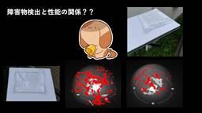
Starlinkの障害物検出と性能の関係を調べてみた
設計・SRE・基盤 · 組織・マネジメント・QA
1
IIJ Engineers Blog設計・SRE・基盤 / 組織・マネジメント・QA
「Starlink は、上空を移動する衛星との接続を維持するために、視界を遮るものがなく、空がよく見える場所に設置する必要があります。木の枝や柱や屋根など、St...
5日前
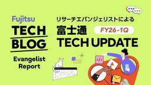
プレスリリースから紐解く｜リサーチエバンジェリストによる富士通研究所TECH UPDATE✨（FY26-2Q＋α）
サイエンス
fltech - 富士通研究所の技術ブログサイエンス
富士通のテクノロジーのプレスリリースで研究所が対外的にお知らせしたホットトピックスを俯瞰し、要点をリサーチエバンジェリストの視点からお届け。 今回の内容は、量子のいろいろな話題、CPUの話題と、CEATEC予告です。
5日前